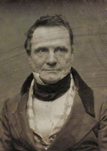

Home Ada Lovelace Charles Babbage Alan Turing
Charles Babbage was an English polymath. A mathematician, philosopher, inventor and mechanical engineer, Babbage originated the concept of a digital programmable computer.
Babbage is considered by some to be "father of the computer". Babbage is credited with inventing the first mechanical computer, the Difference Engine, that eventually led to more complex electronic designs, though all the essential ideas of modern computers are to be found in Babbage's Analytical Engine, programmed using a principle openly borrowed from the Jacquard loom. Babbage had a broad range of interests in addition to his work on computers covered in his book Economy of Manufactures and Machinery. His varied work in other fields has led him to be described as "pre-eminent" among the many polymaths of his century.
The Analytical Society was a group of individuals in early-19th-century Britain whose aim was to promote the use of Leibnizian notation for differentiation in calculus as opposed to the Newton notation for differentiation. The latter system came into being in the 18th century as a convention of Sir Isaac Newton, and was in use throughout Great Britain. According to a mathematical historian: In 1800, English mathematics was trapped in the doldrums of fluxional notation and of an intuitive geometric-physical approach to mathematics designed to prepare the student for reading Newton's Principia...The study of any mathematics not pertinent to the traditional questions of Tripos was not only ignored, but actually discouraged. Cambridge was isolated, and its students remained ignorant of continental developments.